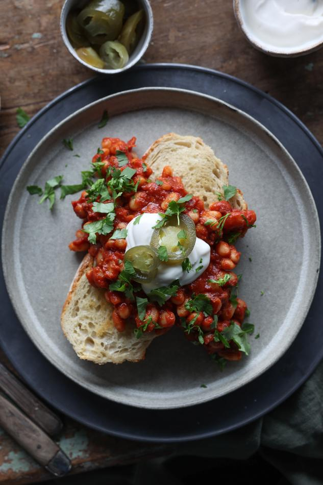

Saucy Beans on Garlic Toast
-
 10 mins
10 mins
- Main
- BreakFast
Navy beans, in the Netherlands go by the descriptive name of "witte bonen" (white beans). They are also known as haricot or Boston beans and are a fantastic base for bold flavours. Inspired by Britain's classic beans on toast recipes, we've added a spicy kick to the usual baked beans. Making the toast into buttery garlic bread adds a burst of flavour to this simple, quick meal. Serving

- Total
- 10 mins

- Prep
- 5 mins

- Cook
- 5 min